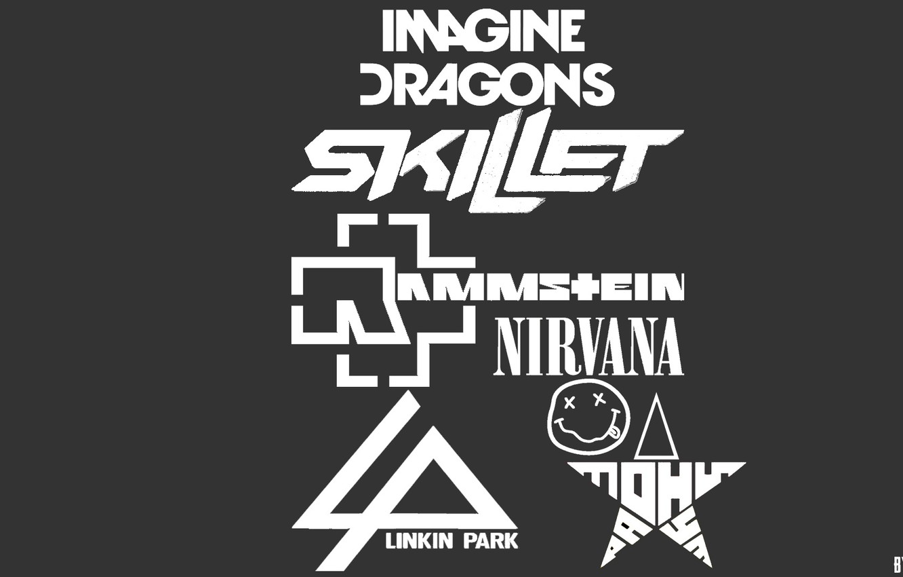

Al igual que otros blogs, habla sobre novedades tecnológicas en informática, telefonía móvil, ciencia, videojuegos,
entre otros. ¿Qué le diferencia de otros? Hay dos puntos en los que Engadget busca ser diferente de otros sitios web
de tecnología. En primer lugar, dedica varias de sus entradas al mundo del entretenimiento, en concreto sobre
entretenimiento en Internet, como por ejemplo YouTube o Netflix. De este modo, hablan sobre contenido que interesa a
sus usuarios sin dejar de lado su principal interés, la tecnología. En segundo lugar, varios redactores del blog publican
reseñas con un tono informal y divertido, y sus publicaciones suelen ir acompañadas de fotos y vídeos, con tal de mantener
la atención por parte de los usuarios.
Experiencia
Habilidades blandas
Soy una persona proactiva, dinámica, con habilidad para manejo
de personal, capacidad de análisis, iniciativa, dispuesto a
escuchar y a trabajar en equipo con conocimiento de Ingles
intermedio en sus diferentes formas,hablado,escrito y comprensión,
acostumbrado a trabajar bajo presión y a interrelacionarme con
miembros de diferentes niveles jerárquicos.
Habilidades con tecnología
Habilidades transversales
Poseo un conjunto de habilidades en el proceso del análisis de requerimientos,
siguiendo con el diseño de software, el desarrollo de pruebas automáticas.
Proyecciones
En algún futuro me visualizo convirtiendome en un programador full-stack teniendo dominio
en un extenso rango de las tecnologías más necesarias para desarrollo web
y desarrollo de aplicaciones distribuidas.
Es la naturaleza práctica de la programación lo que hace que me
atraiga tanto. Soy una persona a la que le gusta ver resultados
y la programación me permite crear un programa en sólo unos
minutos y verlo funcionar desde ese mismo instante (aunque no
haga nada útil). Luego puedo añadir una línea de código e
inmediatamente ver el efecto que tiene. Es maravilloso.
Gustos

Música
En cuanto a pasatiempos tengo varios, como escuchar música
más que todo Rock , Hip Hop, Electrónica , Salsa etc.
Películas
En el campo de las películas, me gustan mucho las de terror,
pero no las típicas que tienen sustos que todo el mundo ya
conoce, sino así tipo documental como "Fenomeno Siniestro"
tanto la parte uno como la parte dos. Me atrae también mucho
lo que es silent hill, resident evil etc.
Blog
Lobo Ártico
El lobo ártico, también llamado lobo blanco o lobo polar,
se caracteriza por tener un color de pelo único, que no podremos
ver en cualquier otro tipo de lobo. Este animal puede ser considerado
como una raza, subespecie o variante geográfica del lobo gris (Canis Lupus),
una especie que originalmente vivía en todo el hemisferio norte.